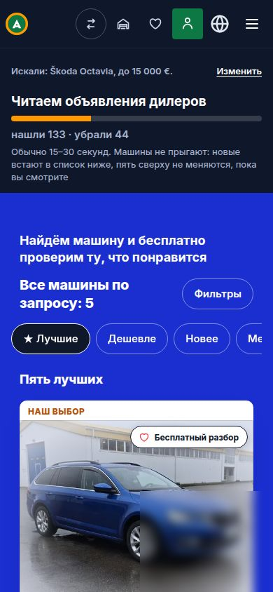

← на картуH-003ждёт решения Антона о запуске и сумме
Реклама Google сразу в подбор
Мысль одной фразой
Если вести людей из поиска Google сразу в подбор нужной модели, они будут класть машину в гараж вдвое чаще, чем пришедшие со страниц сайта.
Что видит человек

Вход по рекламе на телефоне: подбор начинается сразу, с моделью из объявления.
Почему так думаем
- Сейчас почти все приходят со страниц сайта: 246 из 248.
- Людей мало: для 10 платных отчётов в день нужно примерно в 2,5 раза больше подборов.
- Человек из поиска приходит с моделью в голове.
Что меняем
- Объявление в Google ведёт сразу в подбор с моделью.
- Все люди рекламы попадают в новую версию.
- Считаем их отдельной строкой — в главное число новой версии они не входят.
Число
8→16сейчас → нужно: из 100: люди рекламы против пришедших со страниц сайта
Когда ответ
Через 14–31 день после запуска — зависит от того, сколько людей в день придёт с рекламы (20 или 5).